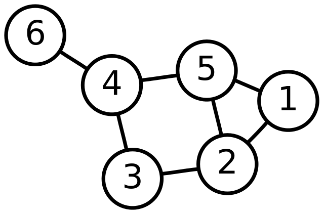
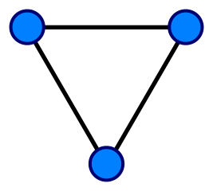
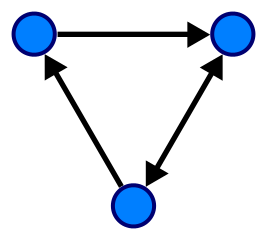
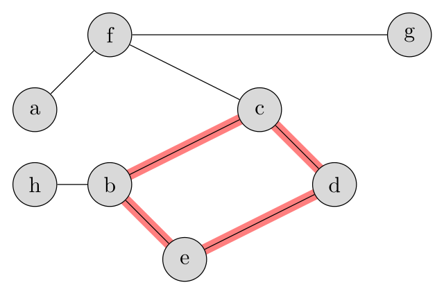
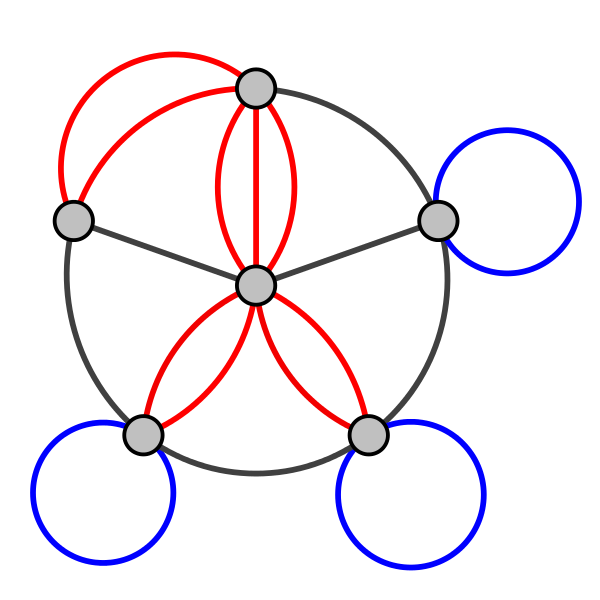
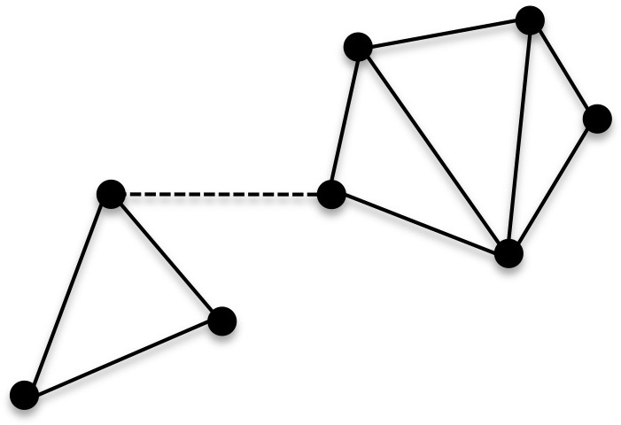
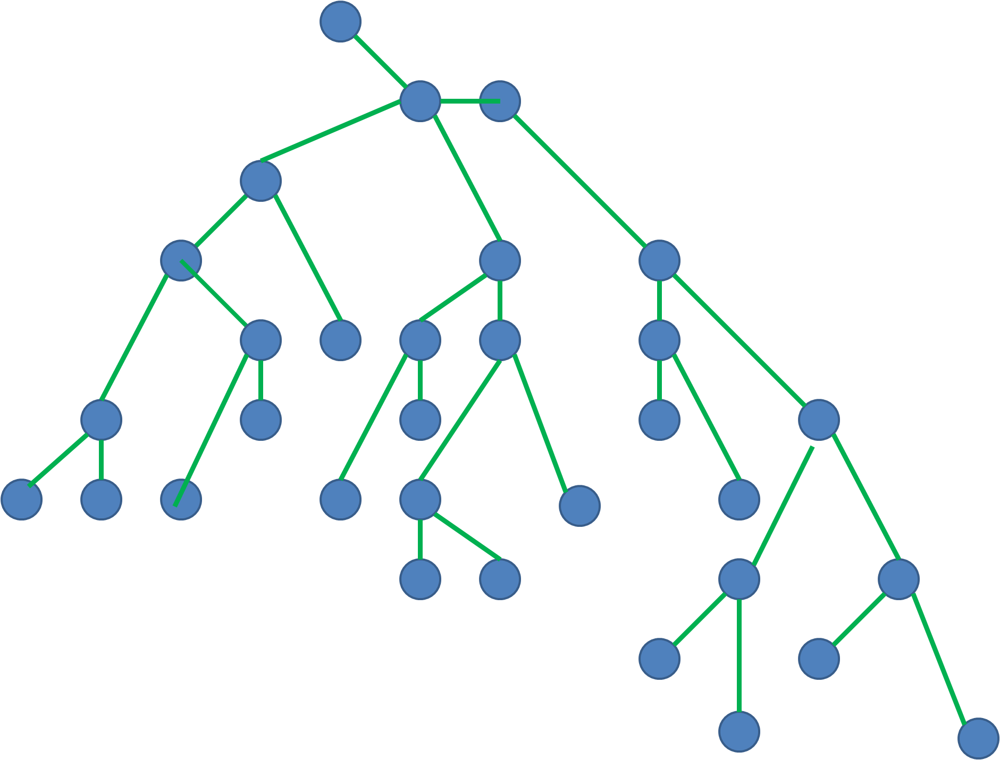
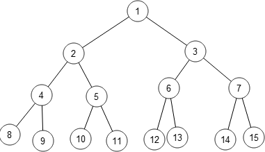
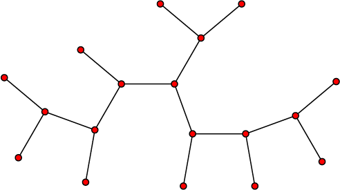

Определение графа
Графы - фундаментальное понятие как в математике, так и в информатике. Проще всего объяснить его с помощью аналогии с дорожной системой. Существует определённый набор городов, некоторые из которых связаны дорогами, которые могут быть как односторонними, так и двухсторонними. Вся эта структура и называется графом.
Ну а более формально, граф - комбинация набора вершин и набора рёбер. Вершины - это города, а рёбра - дороги. Визуально граф можно представить так:

Этот граф состоит из 6 вершин, пронумерованных начиная с единицы, и 7 двухсторонних рёбер. Рёбра обычно записывают в виде пар вершин, которые они соединяют: 1-2, 1-5, 2-3, 2-5, 3-4, 4-5, 4-6.
Ориентированные и неориентированные графы
Мы уже упоминали, что “дороги” в графе могут быть как односторонними, так и двухсторонними. Для этого свойства существует отдельный термин: односторонние “дороги” называются ориентированными рёбрами (или дугами), а двухсторонние - неориентированными.
Граф, в котором все рёбра неориентированные, также называют неориентированным, а граф с ориентированными рёбрами, соответственно, ориентированным.


Слева изображён неориентированный граф, а справа - ориентированный. Как несложно догадаться, левый граф можно обходить как по часовой стрелке, так и против, а правый можно полностью обойти только по часовой, хотя одно из ребёр в нём также неориентированное (считается, что это два противоположных ориентированных ребра).
Пути и циклы
Путём в графе называется последовательность вершин, каждая из которых соединена со следующей ребром. Чаще всего под “путём” подразумевают простой путь, все вершины которого различны. Путь, который проходит через какую-либо вершину более одного раза называют сложным путём.
Если первая вершина пути совпадает с последней, то такой путь называют циклом.
Приведём примеры на этом графе:

Из множества возможных простых путей самый длинный:
(существуют и другие пути с такой же длиной).
Циклом является путь
(выделен цветом). Можно начать и с любой другой вершины, например,
.
Кратные рёбра и петли
Существует множество разновидностей графов, и среди них встречаются довольно специфические. В частности, так называемые мультиграфы разрешают наличие между двумя вершинами нескольких рёбер (называемых кратными рёбрами), а также наличие петель. Петля - ребро, входящее в ту же вершину, из которой исходит. Выглядят они следующим образом:

Красным выделены кратные рёбра, а синим - петли.
Мультиграфы встречаются в задачах реже чем обычные графы (называемые простыми), но всё же встречаются, поэтому стоит иметь о них элементарное представление.
Связные графы
Граф называется связным если между любой парой вершин существует хотя бы один путь. Как пример рассмотрим следующий граф:

Одно из рёбер проведено штрихами. Если это ребро присутствует, то граф является связным. Если же его убрать, то связность теряется, граф разбивается на две части, друг с другом не связанные. Такие части называются компонентами связности.
Определение дерева
Дерево - вид графа, который можно назвать самым простым, но они обладают множеством особых свойств и встречаются в задачах чуть ли не чаще остальных графов.
Дерево - это связный граф без циклов, петель и кратных рёбер.
Все изображённые графы являются деревьями:



Среди множества свойств деревьев можно выделить два самых известных:
1. Количество рёбер связано с количеством вершин формулой
.
2.Между любой парой вершин существует ровно один путь.
Матрица смежности
Существует два основных способа представления графов в программировании. Один из них, матрица смежности, используется гораздо реже, но очень просто реализуется. Граф из
вершин задаётся матрицей (двумерным массивом)
, в которой
- логическое значение, true или false, обозначающее, существует ли ребро из вершины
в вершину
.
В качестве примера решим простую задачу: для каждой вершины графа выведем количество рёбер, смежных с ней.
1. using namespace std;
2.
3. bool graph[1000][1000];
4.
5. int main() {
6. int n, m; //количество вершин и рёбер соответственно
7. cin >> n >> m;
8.
9. for (int i = 0; i < m; i++) {
10. int u, v; //номера вершин, соединённых очередным ребром
11. cin >> u >> v;
12.
13. u--, v--; //Здесь стоит остановиться и вдуматься.
14. //Чаще всего в задачах вершины будут нумероваться с 1 до N,
15. //в отличие от индексации массивов в C++.
16.
17. //У этой проблемы есть два решения.
18. //Первое: работать с номерами "как есть": создавать массивы размером N + 1,
19. //использовать циклы от 1 до N, и т.д.
20. //Второе: уменьшать номера вершин на единицу при вводе, и увеличивать обратно при выводе
21.
22. //Какое из них использовать - ваш личный выбор.
23. //Для меня 1-индексация в С++ выглядит очень чужеродно, поэтому я использую второе решение.
24.
25. graph[u][v] = graph[v][u] = true; //Если бы граф был ориентированным, то обратное ребро мы бы не создавали.
26. }
27.
28. for (int i = 0; i < n; i++) {
29. int c = 0;
30. for (int j = 0; j < n; j++) {
31. if (graph[i][j]) {
32. c++;
33. }
34. }
35.
36. cout << c << " edges adjacent to vertex " << i + 1 << endl;
37. }
38.}
Если требуется также удалять рёбра, то вместо вектора нужно использовать std::set.
Преимущества матрицы смежности:
1.Сложность проверки наличия ребра между двумя вершинами:
Недостатки матрицы смежности:
1.Занимает
памяти, что неприемлемо для достаточно больших графов.
2.ложность перебора всех вершин, смежных с данной:
Список смежности
Гораздо чаще для представления графов используется список смежности. Его идея заключается в хранении для каждой вершины расширяемого массива (вектора), содержащего всех её соседей.
Решим ту же задачу с использованием списка смежности (и С++11 для for-each):
1.using namespace std;
2.
3.vector<int> graph[100000]; //массив из 100000 векторов.
4.
5.int main() {
6. int n, m;
7. cin >> n >> m;
8.
9. for (int i = 0; i < m; i++) {
10. int u, v;
11. cin >> u >> v;
12. u--, v--;
13.
14. graph[u].push_back(v);
15. graph[v].push_back(u);
16. }
17.
18. for (int i = 0; i < n; i++) {
19. int c = 0;
20. for (int v: graph[i]) { //можно было бы просто записать "int c = graph[i].size();",
21. c++; //но такая реализация показывает, как можно перебирать
22. } //соседние вершины.
23.
24. cout << c << " edges adjacent to vertex " << i + 1 << endl;
25. }
26.}
Если требуется также удалять рёбра, то вместо вектора нужно использовать std::set.
Преимущества списка смежности:
1.Использует
памяти, что оптимально
2.Позволяет быстро перебирать соседей вершины.
3.Позволяет за
проверять наличие ребра и удалять его (при использовании std::set).
Недостатки списка смежности:
1.При работе с насыщенными графами (количество рёбер близко к
) скорости
может не хватать (единственный повод использовать матрицу смежности).
2.Для взвешенных графов приходится хранить vector<pair<int, int>>, что усложняет код.